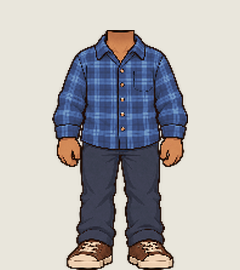
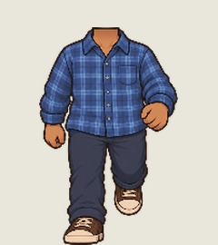
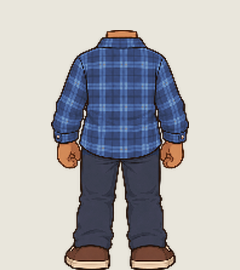
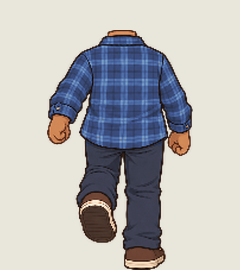
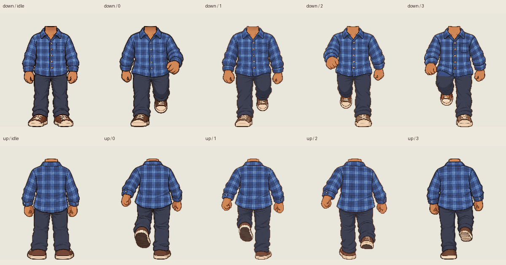

One palette for the flannel, jeans, skin and footwear across eight walking frames and two idle views. Before and after play in sync. Only down/3 has a new drawing. The other nine images are byte-identical to v12; all views use the same shared palette.
Front and rear source-art review only. These candidates are not installed in the game. Each body is uniformly scaled to the same height; widths are never stretched.






